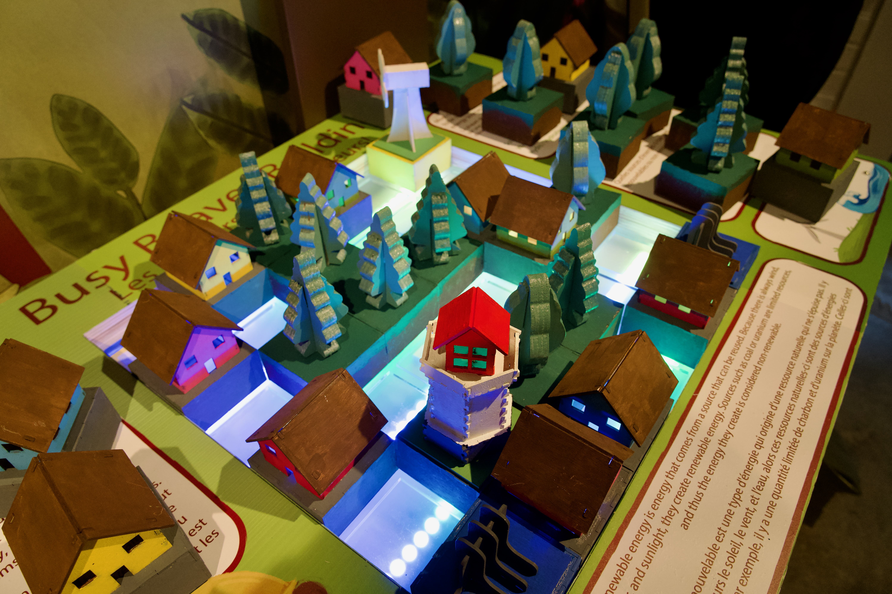
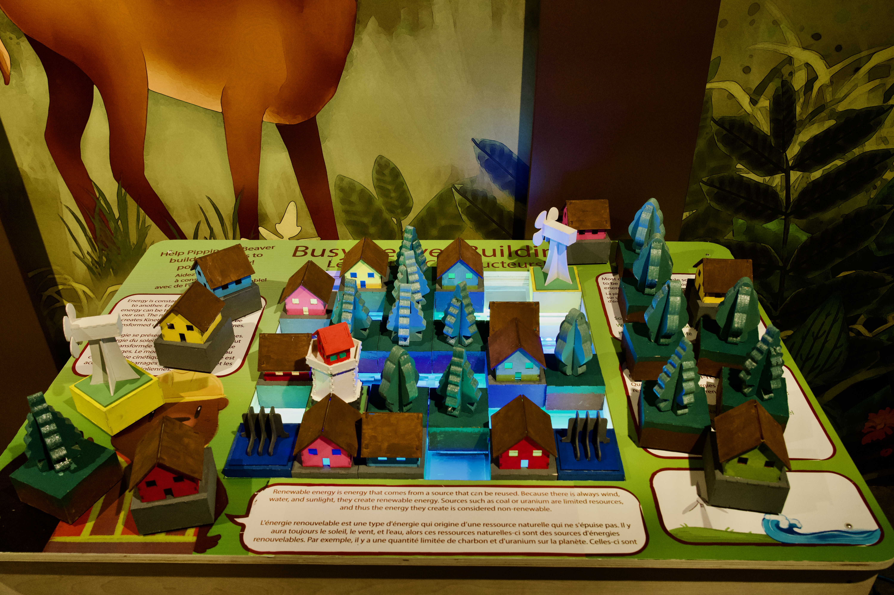
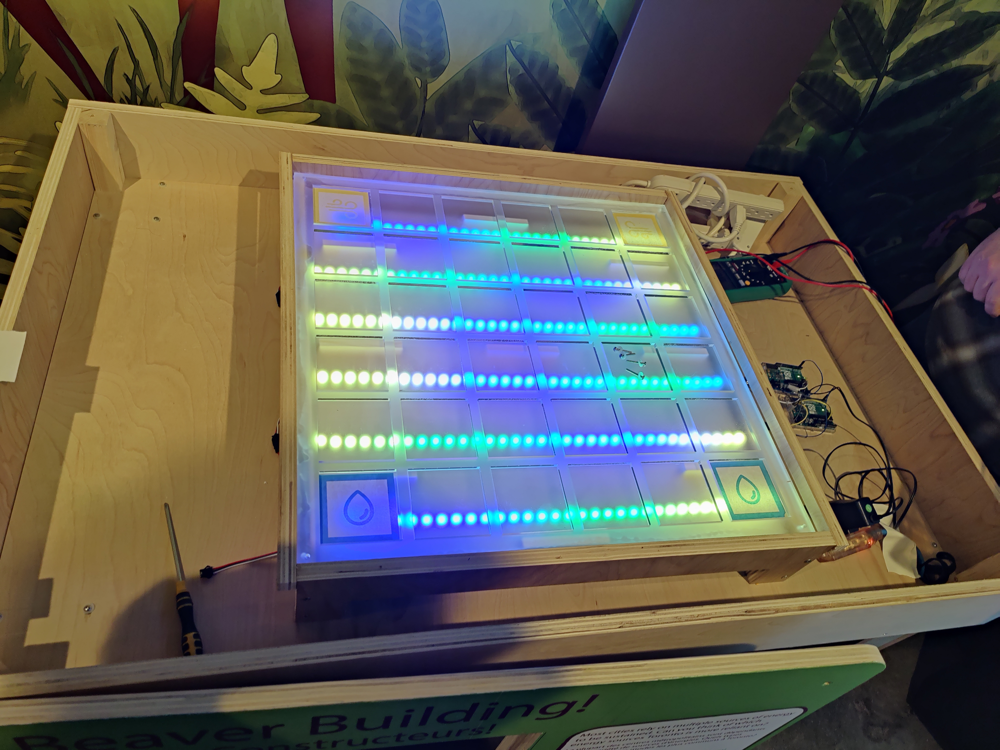

PROJECT / 01
Busy Beaver
Building
Role
Project coordinator.
Date
December 2025
Project type
Interactive installation
Built in collaboration with the Ontario Science Centre, Busy Beaver Building is an interactive experience designed to introduce younger audiences to the fundamentals of renewable energy through play. Participants are invited to design and construct their own miniature cities, learning to balance creativity with sustainability as they explore how to power their environments efficiently.


